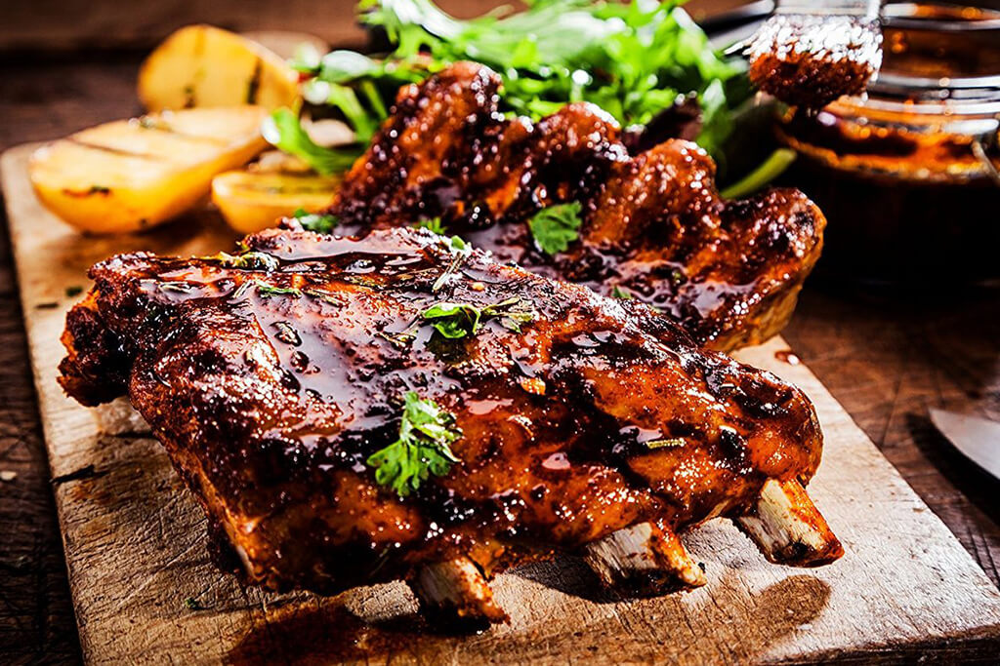

Costilla de Res a la Parrilla

Al asado de tira también se le conoce como tira de asado, tira de costilla, costilla en tira, costilla cargada, short rib o, simplemente, asado.
Normalmente, se obtiene de las primeras cinco costillas de la res, en su parte baja. En esta ocasión nos complace presentar una sencilla receta para preparar asado de tira, para cuatro personas. El ideal es que tenga 8 centímetros de ancho.
Ingredientes
- 2kg de tira de costilla
- Sal
Preparación
- Retire la costilla del refrigerador una hora antes de cocinarla, para evitar cambios bruscos de temperatura.
- Encienda la parrilla y espere a que los hierros estén calientes. Cocine a fuego medio.
- Coloque la carne con los huesos hacia abajo.
- Sale la carne una única vez, en la parte de encima.
- Espere durante unos 20 minutos a que la parte superior de la carne esté tibia y dele vuelta.
- Cuando la carne tenga color dorado por fuera y se sienta blanda, al tacto, saque de la parrilla y pruebe. El punto se obtiene cuando la carne se siente un poco dura, pero si la prefiere menos jugosa, la puede dejar sobre la parrilla unos minutos más.
- Retire la carne de la parrilla, para que no pierda su punto, corte en porciones y sirva.